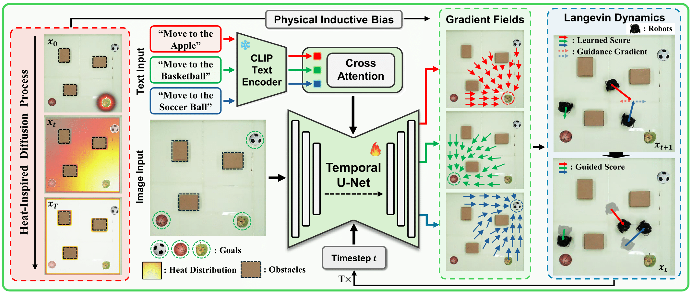
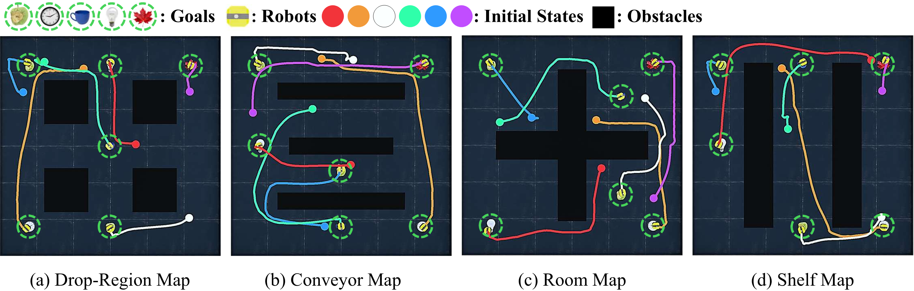
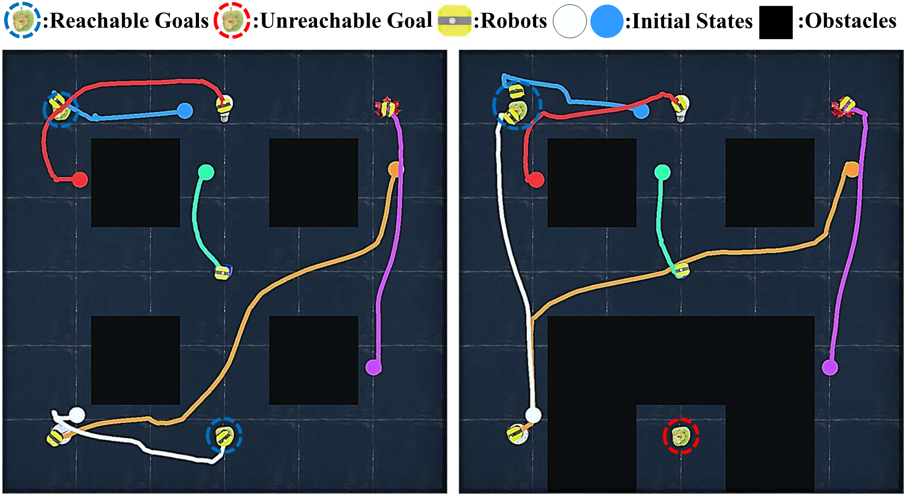

Diffusion models have recently emerged as powerful tools for robot motion planning by capturing the multi-modal distribution of feasible trajectories. However, their extension to multi-robot settings with flexible, language-conditioned task specifications remains limited. Furthermore, current diffusion-based approaches incur high computational cost during inference and struggle with generalization because they require explicit construction of environment representations and lack mechanisms for reasoning about geometric reachability.
To address these limitations, we present Language-conditioned Heat-inspired Diffusion (LHD), an end-to-end vision-based framework that generates language-conditioned, collision-free trajectories. LHD integrates semantic priors from CLIP, a vision-language model (VLM), with a collision-avoiding diffusion kernel serving as a physical inductive bias that enables the planner to interpret language commands strictly within the reachable workspace. This naturally handles out-of-distribution (OOD) scenarios by guiding robots toward accessible alternatives that match the semantic intent, while eliminating the need for explicit obstacle information at inference time.
Extensive evaluations on diverse real-world-inspired maps, along with real-robot experiments, show that LHD consistently outperforms prior diffusion-based planners in success rate, while reducing planning latency.

The model takes a raw RGB image and diffusion timestep t as inputs, conditioned on language instructions. A pre-trained CLIP text encoder extracts fixed text embeddings, which are injected into the U-Net via cross-attention. The network outputs individual gradient fields, guiding each robot toward its respective goal while incorporating a heat-inspired physical inductive bias that inherently encodes reachability. During inference, Langevin dynamics iteratively sample the next state by aggregating these learned scores with inter-robot collision avoidance gradients, enabling safe multi-robot coordination.

We evaluated LHD across four challenging environments: Drop-Region, Conveyor, Room, and Shelf maps, scaling from 3 up to 30 robots. The figure illustrates the generated trajectories for 6-robot scenarios across each map. Colored dots indicate the start positions of the robots, and the corresponding colored lines represent their trajectories to the goals.

A key advantage of LHD is its ability to generalize to out-of-distribution (OOD) scenarios, such as unseen obstacle layouts, without any additional fine-tuning. The figure provides a qualitative visualization of this generalization capability. While robots naturally navigate to their nearest targets in the unobstructed case (left), they autonomously redirect to the accessible target that matches the semantic instruction when a goal becomes unreachable (right).
TBD